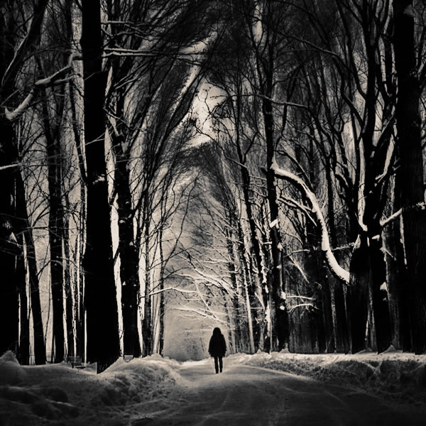
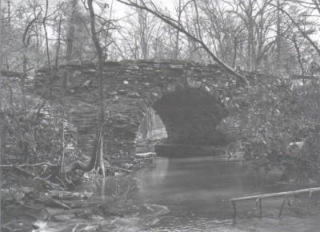
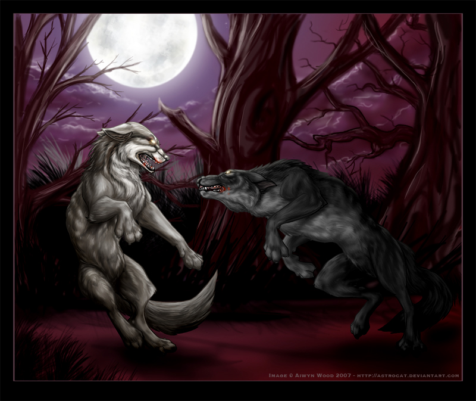
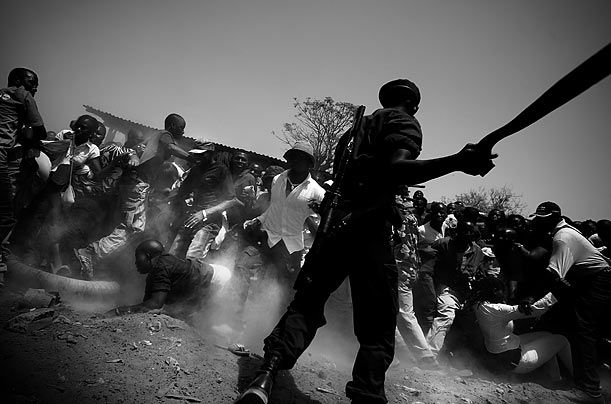

A chose your own adventure game!
Instructions: Read each "card" below, and choose how your character will respond from the drop down choices at the bottom of the text.
A child named finds themself walking home towards their village hamlet through the forest late one night. It is a cold night, and notably a full moon. shudders when they hear a gutteral beastlike howl pierce the air. A gust of wind rustles the leaves of the nearby trees, but a ways off the sound of snapping braches can be heard.
As turns around, they see a huge silloutte rush towards them before they are vicously bitten on the neck and everything fades to black as they lose consciousness. When awakes they realize they've awoken under the village bridge, they're clothes in tatters and covered in blood.
loses the torn up bloody clothes in a bush and proceeds to sneak they're way back home and into the house before while his family is out and about. successfuly changes and goes about his daily life until th next full moon.
was forced to stay late for acting out at school. While walking home through the forest he notices a a full moon starting to rise over the trees. Suddenly... he hears a noise coming from the bushes. And...FLASH, glowing eye start lunging towards him with teeth shining in the moonlight an almost 8 foot tall werewolf appears. can feel the change start to overcome him. First the nose, then the teeth, and lastly fur and ears. The towering werewolf attacks barely in time for the change. Growling and biting, ripping away flesh. Do You...
walks back to the scene where it happened, and finds a trail of huge foot prints leading back to a small cave. goes to enter the inner chamber to investigate further and is suddenly attacked by a huge werewolf!
A local village person happens to pass by and seems to be going on for hours. is covered in blood and tired but they notice the other werewolf is starting to become exhausted. Suddenly, makes a bold move and goes for the juggular. The giant older werewolf falls to the ground and begins to change. looks down... the werewolf... was... THEIR FATHER
The fight is ferocious and brutal but seems to be going on for hours covered in blood, and runs to alert the locally garrisoned solidiers. As the soldiers approach, a mob has encircled chanting, Burn the wolf! Burn the wolf!" The soilders have been looking all morning for the culprit behind last night's grisly murders, and upon seeing the child, one solider dashes forth enraged at the loss of his own family and strikes 's head from his shoulders.